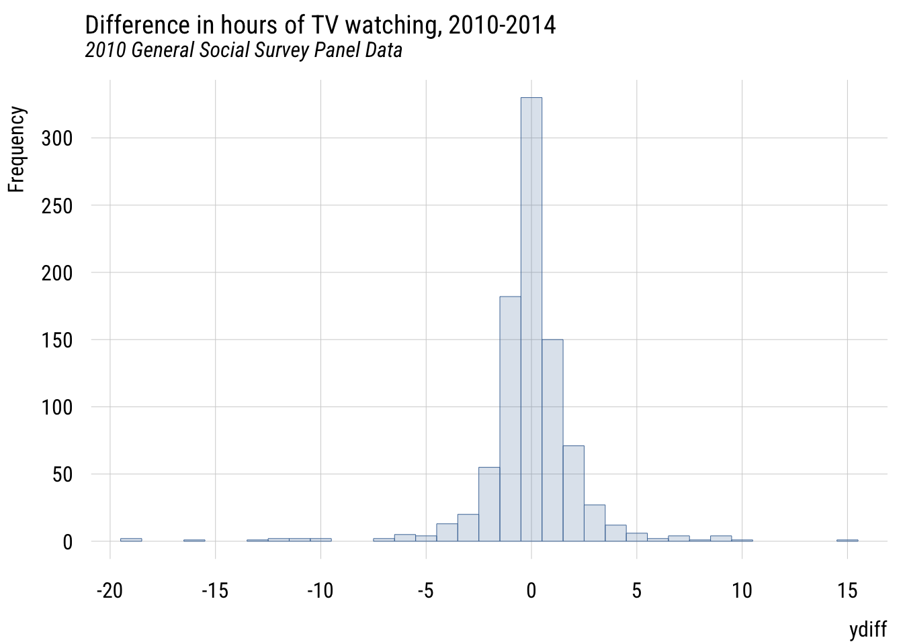
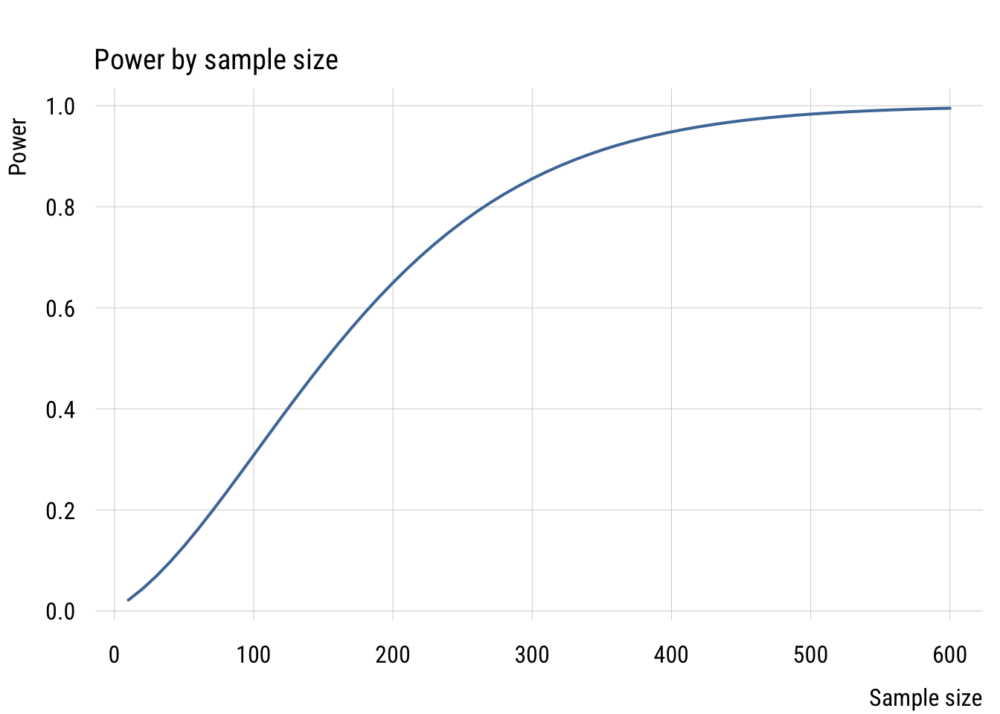
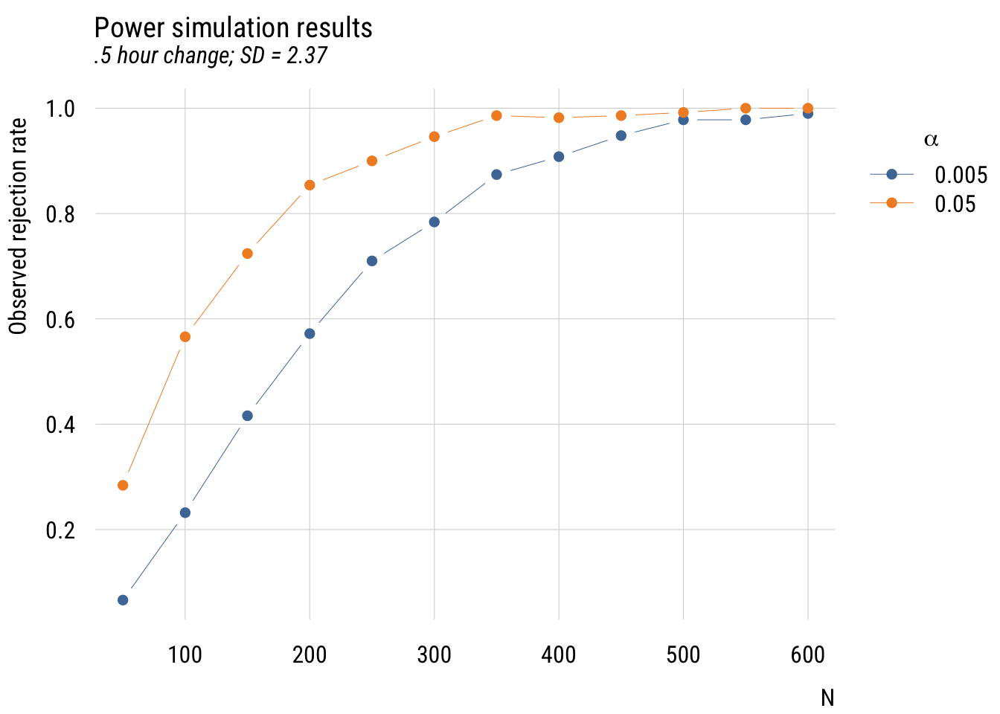
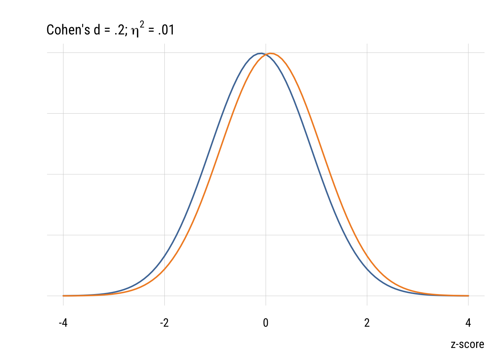
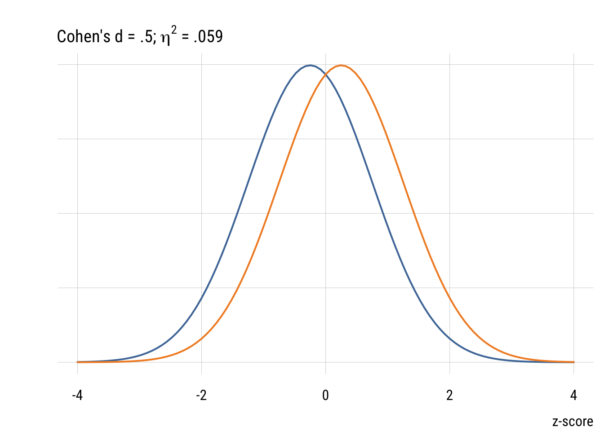
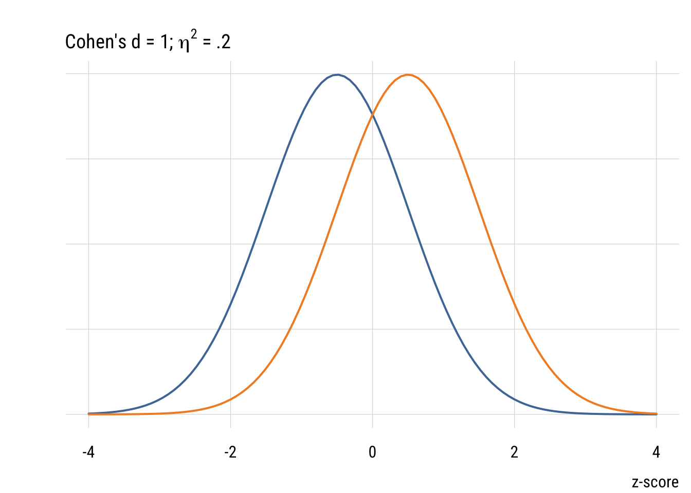
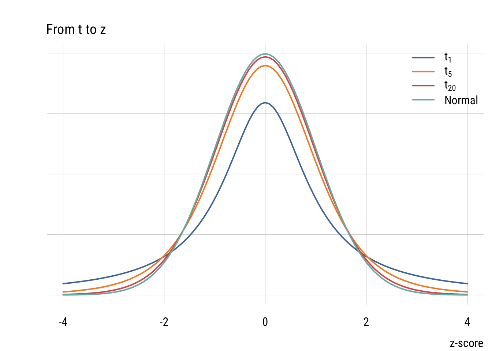

library(gssr)
library(gssrdoc)
library(tidyverse)
library(broom)
library(tinyplot)
tinytheme("ipsum",
family = "Roboto Condensed",
palette.qualitative = "Tableau 10",
palette.sequential = "agSunset")Chapter 5
Overview
Goals
In this section we’re going to look at power, effect sizes, and confidence intervals.
Set up
Load packages and set theme here.
We’re going to use the 2010 GSS panel data. This is how I got the data the first time using Kieran Healy’s {gssr} package. Then I saved it locally. I set #| eval: false in the code chunk below now so that it doesn’t run every time.
data("gss_panel10_long")
saveRDS(gss_panel10_long,
file = here::here("data", "gss_panel10_long.rds"))Load the locally saved GSS data.
gss_panel10_long <- read_rds(here::here("data", "gss_panel10_long.rds"))Power
Motivating example: TV hours
We are going to look at studying how US adults might have changed the number of TV hours they watch. This first chunk is just getting some GSS data and calculating each respondent’s difference in reported hours from 2010 to 2014.
d <- gss_panel10_long |>
select(firstid, wave, y = tvhours) |>
filter(wave %in% c(1, 3)) |>
drop_na() |>
mutate(y = as.numeric(y)) |>
mutate(num_obs = n(), .by = firstid) |>
filter(num_obs == 2) |>
select(-num_obs) |>
pivot_wider(id_cols = firstid,
names_prefix = "y",
names_from = wave,
values_from = y) |>
mutate(ydiff = y3 - y1)
plt(~ ydiff,
data = d,
main = "Difference in hours of TV watching, 2010-2014",
sub = "2010 General Social Survey Panel Data",
type = type_hist(breaks = seq(-23.5, 23.5, 1)))
Since we’re talking about a change, there’s a natural null hypothesis here, which is “no change.” In other words, that \(E(Y_{i3} - Y_{i1}) = 0\).
There are easier ways to do this but let’s keep going with the logic of the book. We’ll estimate a model where the mean difference is assumed to be zero (MC) and a model where we estimate the mean difference from data (MA).
MC <- lm(ydiff ~ 0, data = d)
MA <- lm(ydiff ~ 1, data = d)
sse_MC <- deviance(MC)
sse_MA <- deviance(MA)
(sse_MC - sse_MA) / sse_MC[1] 0.0003702235This is a teeeeeeeny tiny PRE. By checking mean(d$ydiff) we can see that the mean difference is -0.0455556. So the low PRE value isn’t a big surprise here.
But maybe the world has changed since 2014 and I want to check if people changed between 2026 and 2030? How many respondents would I need to recruit for my study?
Calculating power
As the book explains, figuring out how many respondents you need to detect an effect is a question of power. Here’s the power calculation assuming the minimum interesting change would be 30 minutes and that the SD of the difference is the same observed in the GSS. We’ll use the power.t.test() function here but we will talk more about the t distribution (and test) a bit later. For now just go with it!
# minimum interesting change (choice increase or decrease of 30 minutes)
delta <- .5
# estimate of variance of differences
sd_diff <- sd(d$ydiff) # from GSS
# plug everything into the formula
power.t.test(delta = delta,
sd = sd_diff,
type = "one.sample", # I am comparing one sample's difference score
sig.level = .01,
power = .8)
One-sample t test power calculation
n = 265.3863
delta = 0.5
sd = 2.368483
sig.level = 0.01
power = 0.8
alternative = two.sidedSo we’d need a sample of at least 266 people to have at least an 80% chance of rejecting the null hypothesis of no difference if in reality people will (on average) increase or decrease their TV watching by at least 30 minutes over the next 4 years. (This assumes we’ll use an alpha level of .01.)
We can look at this in a slightly different way by seeing what power we’d have for different sample sizes. We’ll make a reusable get_power() function, make a “skeleton” with lots of different sample sizes, compute for each, then visualize.
# get power as a function of a given sample size, etc.
get_power <- function(n) {
tmp <- power.t.test(delta = delta,
sd = sd_diff,
type = "one.sample",
sig.level = .01,
n = n)
return(tmp$power)
}
# make skeleton
power_sims <- tibble(n = seq(from = 10,
to = 600,
by = 10))
# add power results to skeleton
power_sims <- power_sims |>
rowwise() |>
mutate(power = get_power(n))
# plot the result
plt(power ~ n,
data = power_sims,
type = "l",
lwd = 2,
xlab = "Sample size",
ylab = "Power",
main = "Power by sample size")
Given a minimum effect size, expected SD, and alpha level, power increases as a function of the sample size. With around 150 people, we could only detect the difference about half the time even if it’s there. And we definitely wouldn’t need more than 600 people, as the power is nearly 100%.
Simulation power analysis
These calculators are great but we can learn more about power analysis by simulation. I want to write a function that does my whole study from start to finish (i.e., collects data, tests null hypothesis, reports result) with a particular sample size. The goal is to see how often I reject the null hypothesis given that it’s actually false. I will create my own hypothetical world with a known change (30 minutes) and SD (2.37; estimated from the GSS) and then conduct my experiment many, many times under different sample sizes and alpha levels so see how often I can (correctly) reject the null hypothesis.
What this do_study() function returns is a 1 if the null hypothesis is rejected and a 0 if it can’t be rejected.
# create "do study function!
do_study <- function(delta, sd, alpha, n) {
# create fake data with minimal interesting change
d <- tibble(
diff = rnorm(n, delta, sd)
)
# estimate Model C and Model A
mc <- lm(diff ~ 0, data = d)
ma <- lm(diff ~ 1, data = d)
# estimate observed PRE
sse_c <- deviance(mc)
sse_a <- deviance(ma)
pre <- (sse_c - sse_a) / sse_c
df1 <- length(coef(ma)) - length(coef(mc))
df2 <- n - length(coef(ma))
# calculate critical value of PRE
crit_f <- qf(p = 1 - alpha,
df1 = df1,
df2 = df2)
crit_pre <- crit_f / (crit_f + df2/df1)
# STUDY RESULT: return a 1 if reject, a 0 if fail to reject
return(as.numeric(pre > crit_pre)) # this is a logical to 0/1
}Now we can test it out under different conditions and see what the rejection rate looks like.
# create skeleton with variable values
set.seed(0206) # for reproducibility
sim_studies <-
expand_grid(
sid = 1:500, # 500 times per combo
delta = .5, # minimum interesting change
sd = 2.37, # this is from observed GSS difference
n = seq(50, 600, 50), # from 50 to 350 by 25s
alpha = c(.05, .005) # different alpha levels
) |>
rowwise() |>
mutate(reject = do_study( # "do the studies"
delta = delta,
sd = sd,
n = n,
alpha = alpha
))
# summarize results by condition
sim_results <- sim_studies |>
group_by(n, alpha) |>
summarize(prob_reject = mean(reject), # rejection proportions
.groups = "drop") # don't need anymore
# plot the results
plt(prob_reject ~ n | factor(alpha),
data = sim_results,
type = "b",
legend = legend("topright!",
title = expression(alpha)),
xlab = "N",
ylab = "Observed rejection rate",
main = "Power simulation results",
sub = ".5 hour change; SD = 2.37")
This is “messier” than a power calculator but you can see the same basic findings you’d expect. And it (hopefully) gives you a better sense of power as “the probability of rejecting the null hypothesis under a given set of conditions.”[^fn51]
Effect sizes
We picked a 30-minute change as the minimum interesting effect size. But “how big” is this difference? As TV watchers, we have an intuitive sense. But a more general way of quantifying effect size is Cohen’s d. As outlined in the book, this is just the difference divided by the SD. So for the change in TV time it would be .5 hours / 2.37 hours = .21.
For a one-parameter comparison like we have here, Cohen’s d is related to PRE (or \(\eta^2\) or \(R^2\)) as follows:
\[d = 2 \sqrt{\frac{\eta^2}{1- \eta^2}}\]
Or the other way around:
\[\eta^2 = \frac{d^2}{d^2 + 4}\]
So the minimum PRE we were looking for in our power analysis would be given by .21^2 / (.21^2 + 4) or about .011.
Although it’s common (people love guidelines!) you should NOT mechanically use Cohen’s d type values to interepret effect sizes in terms of small, medium, or large. But it’s useful to visualize what some differences look like.



Confidence intervals
CIs are based on the normal distribution (for large samples) or the t-distribution (for smaller samples).
t distribution
The t distribution looks more and more like the normal as the sample size (df) goes up.

Calculating a confidence interval
To get a confidence interval of an estimate (e.g., the mean number of hours people changed their TV watching), we need three ingredients:
- the estimated mean
- the estimated standard error (i.e., the estimated SD of the sampling distribution)
- the theory-based width of the relevant distribution (e.g., normal or t)
For the mean weight of cars in mtcars, we can just do:
m <- mean(mtcars$wt)
m[1] 3.21725For the standard error of the mean, we calculate it as:
\[se = \frac{s}{\sqrt{n}}\]
se <- sd(mtcars$wt) / sqrt(nrow(mtcars))
se[1] 0.1729685Now we need the width of the t-distribution with 31 (\(n-1\)) degrees of freedom for a 99% confidence interval.
width <- qt(.995, 31)
width[1] 2.744042Now we can put it together into an upper bound and a lower bound of a confidence interval.
ub <- m + se*width
lb <- m - se*width
c(lb, ub)[1] 2.742617 3.691883Interpreting a confidence interval
This is trickier than it seems. You want to be able to say something like “we’re 99% sure that the true value is in this interval.” But that’s not quite right. The 99% confidence is about the procedure, not about the estimate you get from real data. The technically correct definition is:
If you were to repeat the entire data-generating-and-interval-building process indefinitely under identical conditions (same model, same population mean), then 99% of the intervals produced by this method would contain the true mean and 1% would not.
t and F
For a one-parameter comparison, the F-statistic is just the square of the t-statistic. To illustrate, let’s revisit our null hypothesis that people did NOT change their TV viewing hours between 2010 to 2014.
mc <- lm(ydiff ~ 0, data = d)
ma <- lm(ydiff ~ 1, data = d)
anova(mc, ma) Analysis of Variance Table
Model 1: ydiff ~ 0
Model 2: ydiff ~ 1
Res.Df RSS Df Sum of Sq F Pr(>F)
1 900 5045.0
2 899 5043.1 1 1.8678 0.333 0.5641tidy(ma) # A tibble: 1 × 5
term estimate std.error statistic p.value
<chr> <dbl> <dbl> <dbl> <dbl>
1 (Intercept) -0.0456 0.0789 -0.577 0.564The anova() function is a shortcut for calculating the F-statistic between the models. The statistic value in the tidy() output shows the t-statistic or how many SEs away from the null is the observed value. As you can see, -.5772 = .333. The p-values are the same as well.